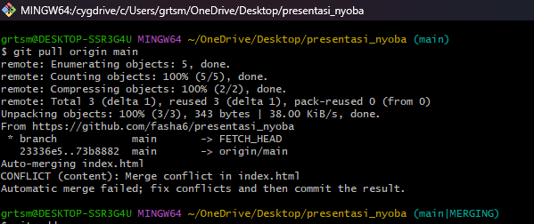
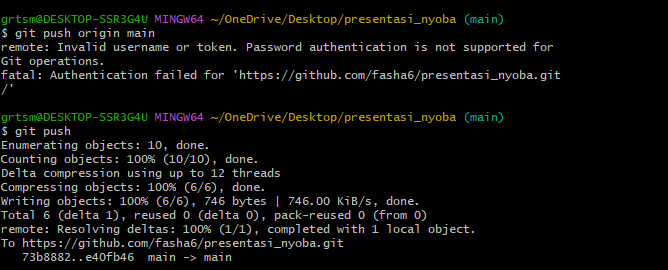

Apa itu git pull?
git pull digunakan untuk mengambil dan menggabungkan perubahan terbaru dari remote repository ke local repository.
Perintah:
git pull origin mainContohnya seperti gambar berikut.
Apa itu git push?
git push digunakan untuk mengirim perubahan lokal ke repository remote.
Perintah:
git push origin mainContohnya seperti gambar berikut
